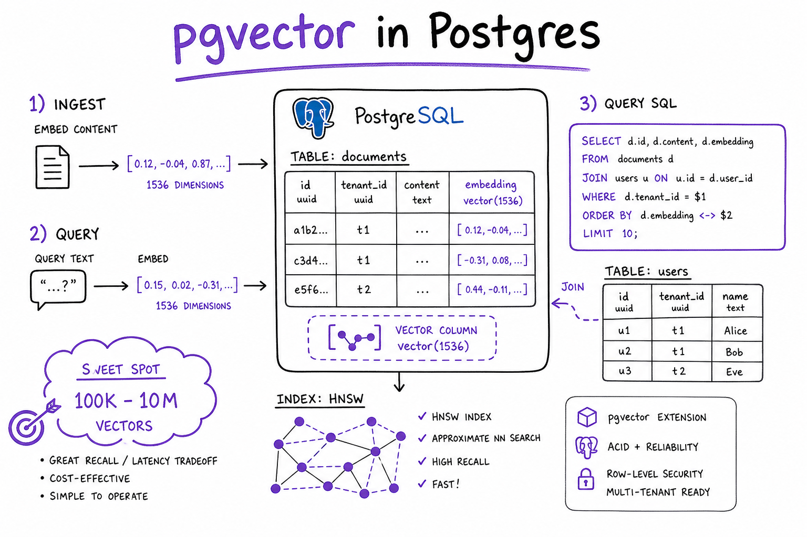
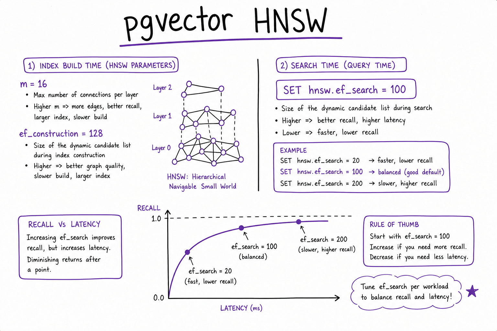
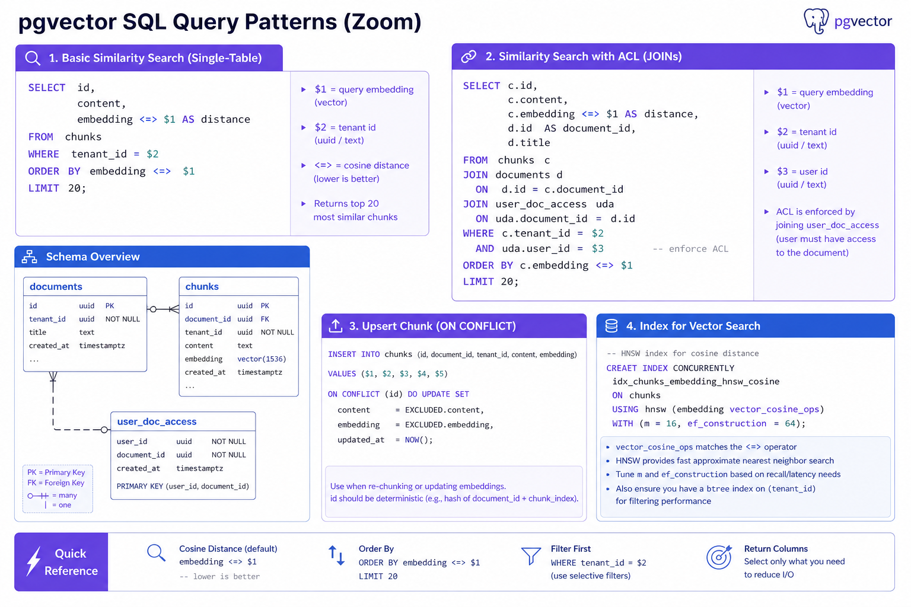

pgvector // AI Tech
PostgreSQL extension for vector similarity search: store embeddings alongside relational data, HNSW/IVFFlat indexes, SQL WHERE filters, and ACID transactions — the default when you already run Postgres.

pgvector in Postgres: embeddings column type vector(1536), HNSW index, SQL WHERE tenant filter, JOIN with users/orders in one query. Sweet spot: 100K–10M vectors per instance.
01 — What & Why
pgvector adds vector type and distance operators to Postgres. One database for users, documents, embeddings, and ACL joins — no separate vector SaaS. See Vector DB overview.
01a — Core Concepts
| Term | Definition | Gotcha |
|---|---|---|
| vector(n) | Fixed-dimension float column | n must match embed model |
| <=> | Cosine distance operator | Use vector_cosine_ops index |
| HNSW | Graph ANN index (PG 16+) | RAM hungry; tune m, ef_construction |
| IVFFlat | Cluster-based ANN | Needs ANALYZE after build |
01b — API Surface
CREATE EXTENSION vector; CREATE TABLE chunks ( id BIGSERIAL PRIMARY KEY, tenant_id TEXT NOT NULL, content TEXT, embedding vector(1536), metadata JSONB ); CREATE INDEX ON chunks USING hnsw (embedding vector_cosine_ops) WITH (m = 16, ef_construction = 128); SET hnsw.ef_search = 100; SELECT id, content, embedding <=> $1 AS dist FROM chunks WHERE tenant_id = $2 ORDER BY embedding <=> $1 LIMIT 20;
02 — When to Use / When NOT
| Case | pgvector? | Alt |
|---|---|---|
| On Postgres, <10M vec | Yes | Pinecone |
| Need JOIN with SQL | Yes | Sync to vector DB |
| 100M+ vectors | Maybe shard | Dedicated vector store |
03 — Architecture
App → Postgres (pgvector + relational tables) → optional read replica for search QPS. Ingest via COPY/batch INSERT; async index build CONCURRENTLY.
04 — Deep Dive: HNSW

HNSW index params m=16 ef_construction=128; query SET hnsw.ef_search=100 for recall/latency tradeoff
Increase ef_search when recall@k drops on eval. Monitor index size vs shared_buffers.
05 — Deep Dive: SQL Patterns

query_vec LIMIT 20 with JOIN to documents table">SQL query: WHERE tenant_id + ORDER BY embedding <=> query_vec LIMIT 20 with JOIN to documents table
Combine ACL: JOIN user_doc_access ON doc_id. Transactional upsert with ON CONFLICT.
06 — IVFFlat
CREATE INDEX USING ivfflat WITH (lists = 100); SET ivfflat.probes = 10; cheaper RAM than HNSW for large N if recall tuned.
07 — Hybrid with FTS
Postgres tsvector + pgvector: dual query in SQL or app; RRF merge. ParadeDB extension for better BM25. Hybrid Search.
08 — vs Others
vs Pinecone: pgvector = SQL + lower cost at moderate scale; Pinecone = zero ops at huge scale.
09 — Production & Ops
- Connection pool (PgBouncer); read replicas for search
- VACUUM after bulk delete; REINDEX on model change
- Partition large tables by tenant_id
10 — Where It Shows Up
- Vector Databases
- RAG End-to-End
- Chroma (dev alternative)
11 — Pitfalls
- Wrong ops class (L2 vs cosine)
- No index — seq scan timeout
- ef_search too low — bad recall
- Storing huge content in vector table — use pointer